// The power network · Fuses · Circuit breakers · Electrical panels
A power network is an interconnected network that delivers electricity to consumers. It is made of three basic networks that hand the power from one to the next.
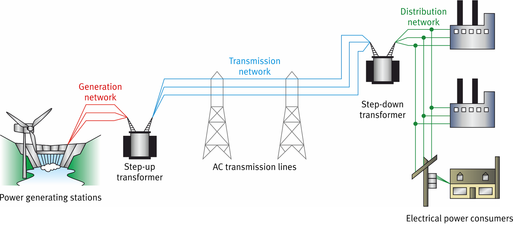
The power stations that produce the electrical power.
The long, high-voltage lines that carry power over great distances.
The shorter lines that deliver power to homes and industry.
The generation network includes all of the power generating stations: fossil-fuel plants (mainly coal), hydropower plants, wind farms, and photovoltaic (solar) power stations. This part of the network produces the electrical power that is fed into the transmission lines.
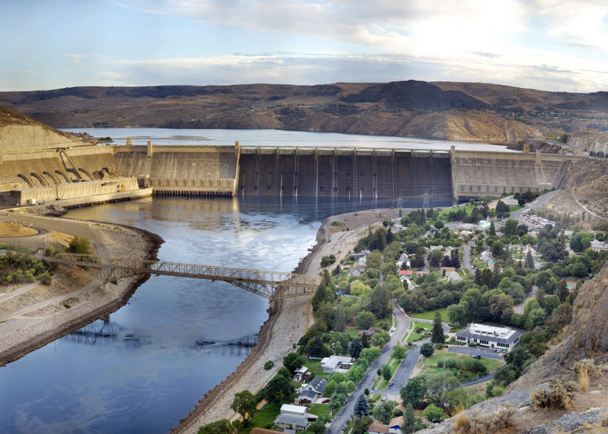
The transmission network includes all of the equipment needed to move power from the generation network to the distribution network. It is mostly made of transmission lines, and their length depends on how far away the power stations are.
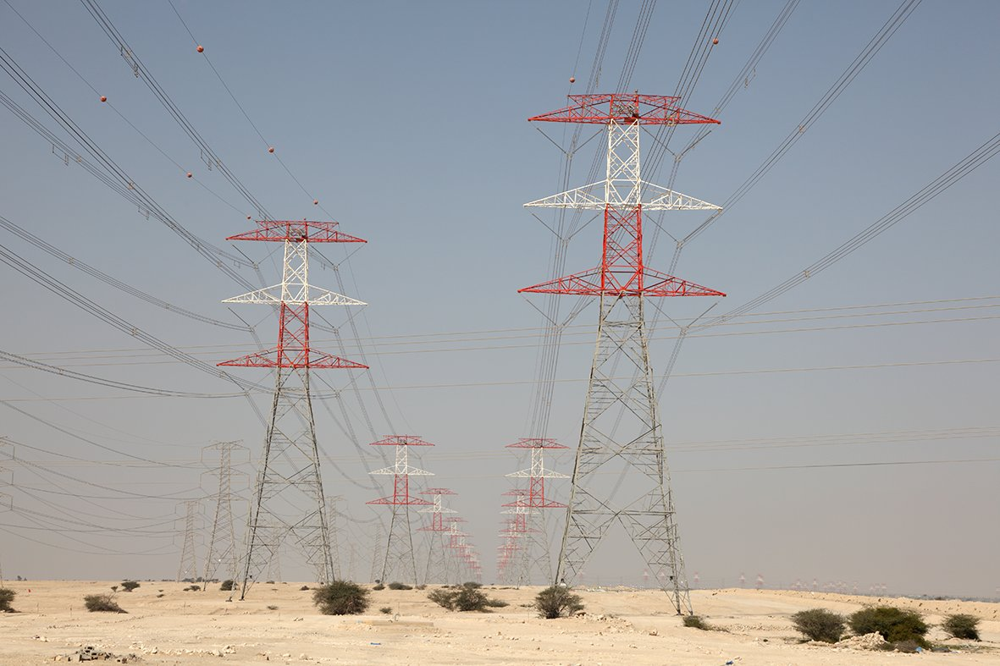
The distribution network includes all of the equipment needed to deliver power to consumers, whether they are residential or industrial. It is made of relatively short distribution lines.
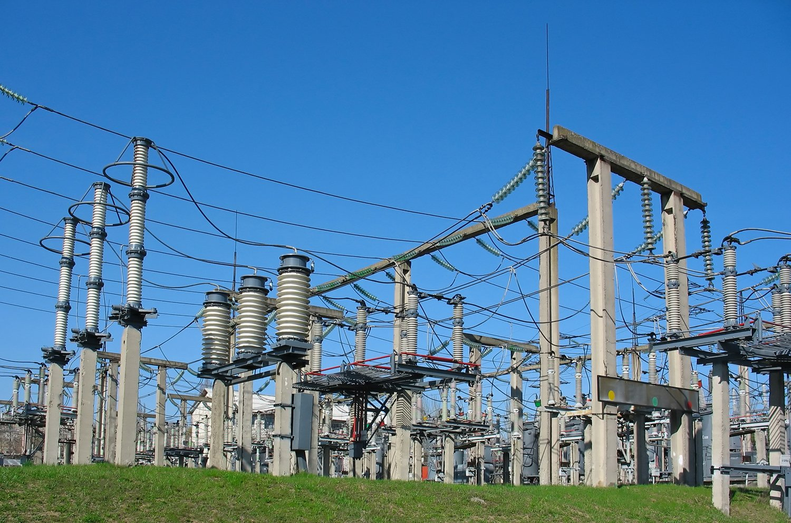
A fuse is basically a low-resistance resistor added in series with a circuit to prevent overcurrents and damage to the equipment. Most fuses are made of a metal wire that melts when the current flowing through it is too high.
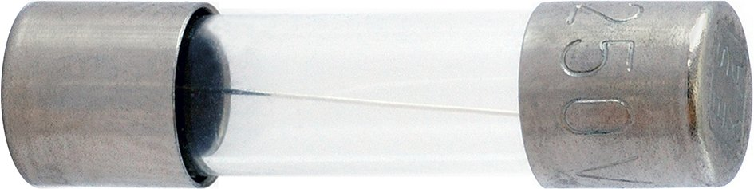
Fuses come in many types and shapes, and each has a current rating: the maximum current it can tolerate before it eventually blows. The rating of the fuse should match the maximum current rating of the equipment it protects.
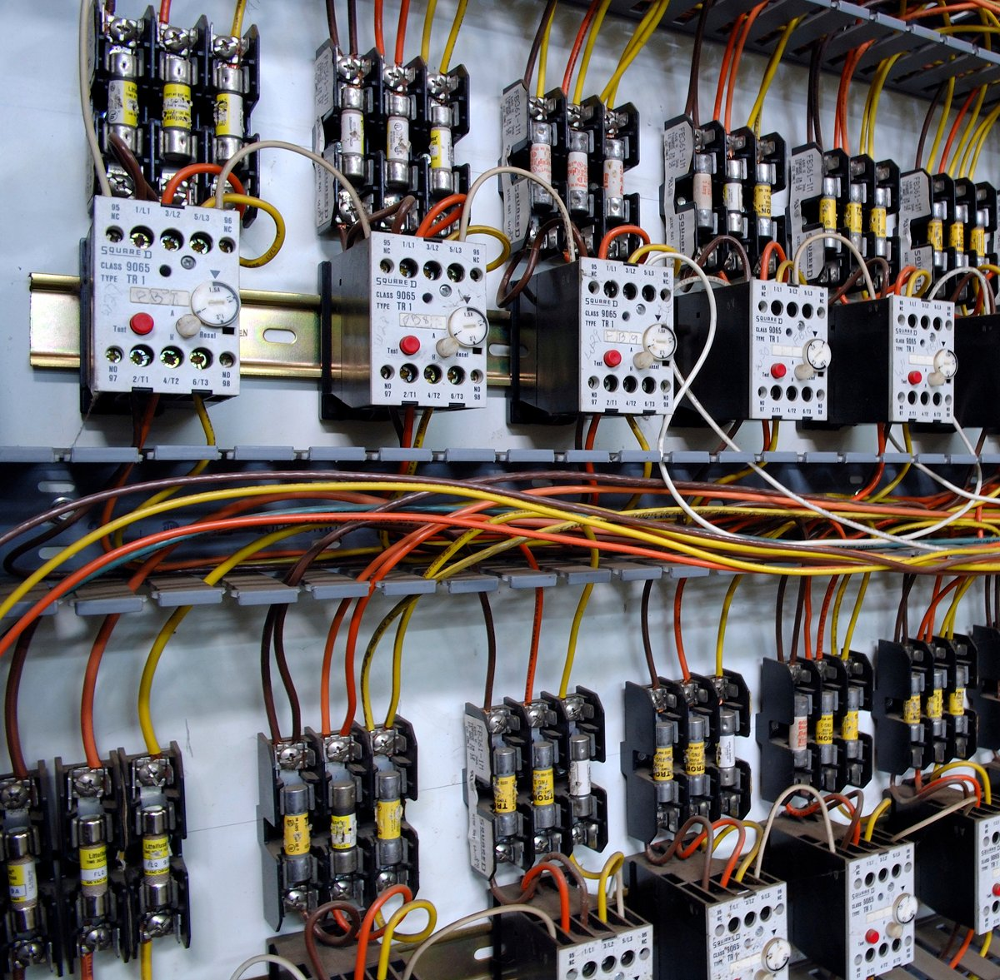
A circuit breaker is an automatically actuated electrical switch that opens a circuit to prevent undesirable operating conditions. Just like a fuse, it is added in series with a circuit to prevent overcurrents and damage to the equipment.
The two most common types are magnetic and thermal circuit breakers. Many breakers combine both mechanisms, which makes them thermal-magnetic circuit breakers.
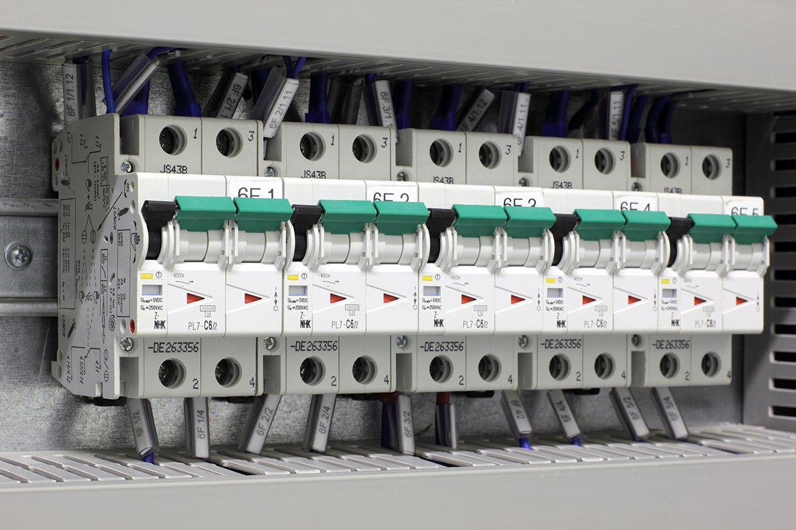
A magnetic circuit breaker uses a solenoid. The current flowing through the breaker also flows through the solenoid, which produces a magnetic field that acts on the breaker contact.
When the current reaches the breaker's current rating, the field becomes strong enough to open the contact. That opens the circuit and stops the current.
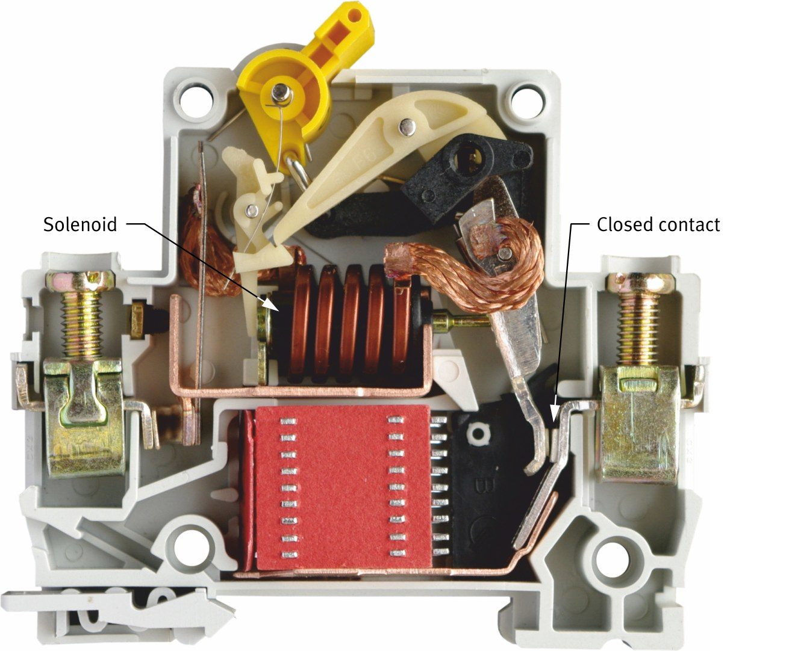
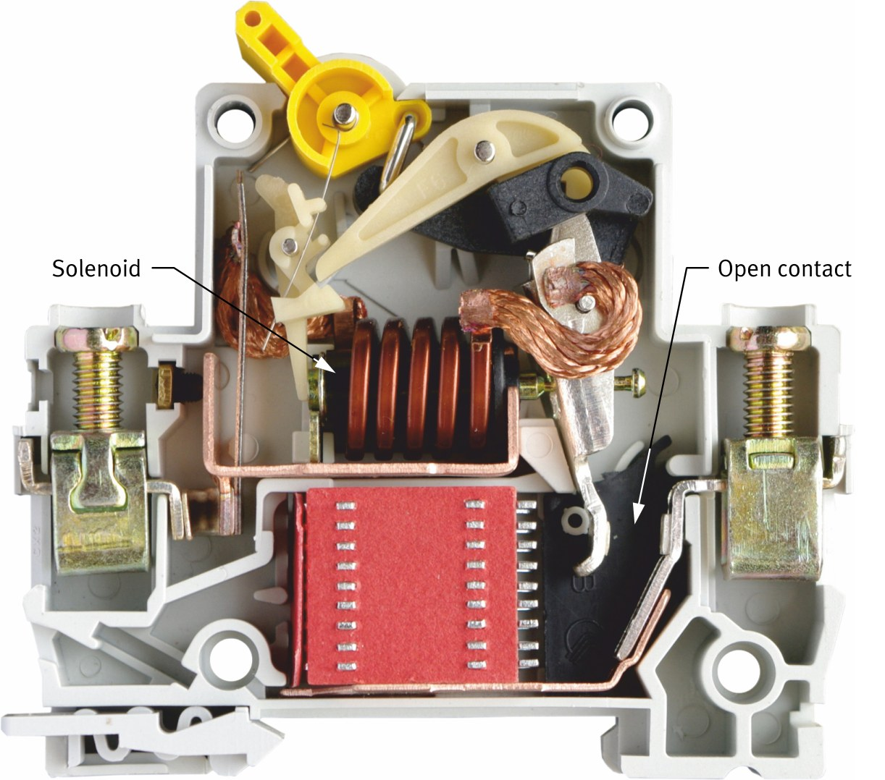
A thermal circuit breaker detects temperature increases. Its mechanism joins two metals that expand at different rates when heated. As the breaker heats up, one metal expands more than the other, which bends the strip and opens the contact.
This detects overcurrents because current flowing through any resistance produces heat, and the higher the current, the greater the heat.
To draw a circuit breaker, start with the general circuit breaker symbol, then add the symbol for each mechanism that can trip it.
A breaker can use more than one tripping mechanism, so its symbol can carry more than one tripping symbol.
In a schematic, the symbols are drawn one after another along the wire, in series. This is how the training system’s thermal-magnetic breaker would be drawn:
Close the fault switch to short-circuit the lamp. With no load in its path, the current shoots up and the protection device opens the circuit.
Try each device. Restore power while the fault is still closed, then again after you open it.
Electrical panels, also called distribution boards, are found throughout distribution networks. A panel is a metal enclosure that subdivides the incoming power into individual circuits, so each circuit can be controlled on its own. A house panel, for example, usually has a separate circuit for each room or area.
Panels come in many sizes. Residential panels are fairly small, while panels in factories hold many components, controls, and switches.
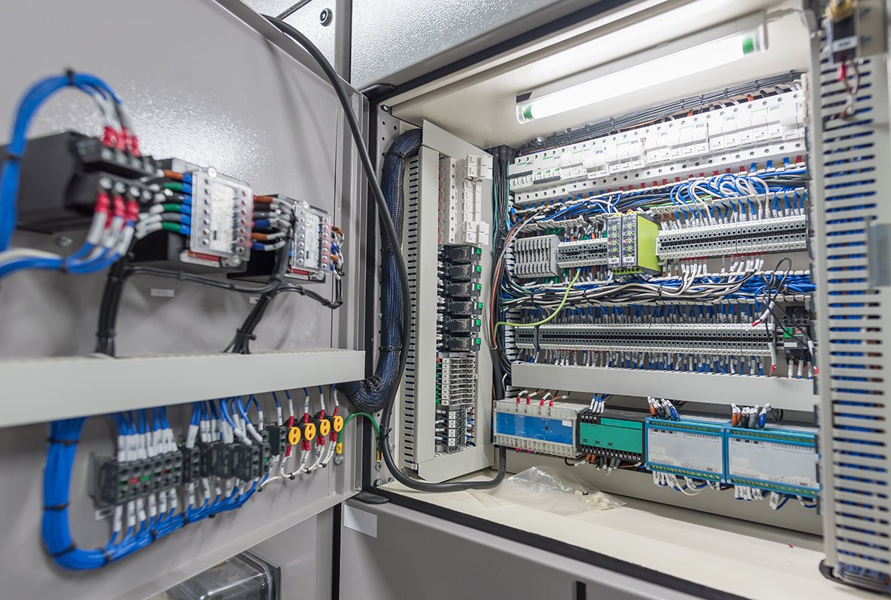
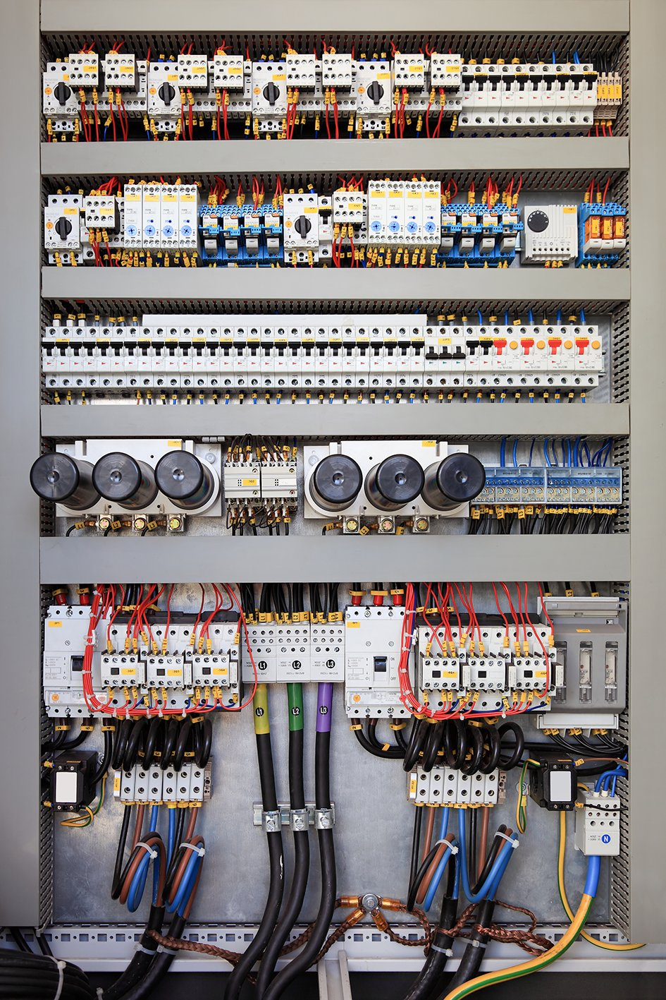
A slow-blow fuse can handle an overcurrent or overvoltage condition for a certain time before it blows.
The circuit breaker and test components are different from every other component in the training system. They run at the ac power network voltage, between 110 V and 240 V depending on your local network, instead of 24 V.
That higher voltage lets enough current flow to trip the breaker both thermally and magnetically. Because of the higher voltage and current, these terminals are large 4 mm terminals, so you must use the large 4 mm leads instead of the miniature 2 mm leads.
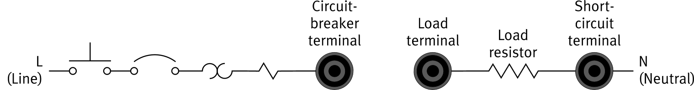